ЛР2. Отчёт — Сайт на Django
Цель работы
Освоить разработку веб-сервиса на Django: описать модель данных, реализовать клиентские интерфейсы и логику сайта по паттерну MVC (в Django — MVT) с шаблонизацией Jinja2 и СУБД PostgreSQL.
Вариант
Порядковый номер 17. Вариант: ((17-1) % 6) + 1 = 5 — список научных конференций.
Средства разработки
Python 3.10+, Django 5.2 LTS, Jinja2, PostgreSQL 16 (в Docker), psycopg, python-dotenv, Bootstrap 5 (CDN).
- PostgreSQL, а не SQLite — так требует задание. Ограничения (
UniqueConstraint) и сортировка сNULLS LASTпроверяются на той же СУБД, что и в рабочей среде. - Jinja2 — по заданию. Django-admin остаётся на родных
DjangoTemplates, поэтому в проекте два движка шаблонов. - Django 5.2 LTS вместо 3.x из задания. «Python 3.6+, Django 3» задаёт нижнюю границу, а ветка 3.2 снята с поддержки в апреле 2024 и не получает исправлений безопасности. Код не использует ничего, что появилось позже Django 3. Весь набор тестов проходит и на Django 3.2.25 / Python 3.10 (проверено в Docker; для 3.2 вместо
psycopgнуженpsycopg2-binary, потому чтоpsycopg3 Django поддерживает с версии 4.2). - Bootstrap даёт готовые компоненты (меню, формы, таблицы, пагинацию) без собственной вёрстки: стилизация нужна для максимального балла.
Как устроен запрос
flowchart LR
B[Браузер] --> U[urls.py]
U --> V[views.py]
V --> M[models.py / ORM]
M <--> DB[(PostgreSQL)]
V --> T[Jinja2-шаблон]
T --> Burls.py по адресу выбирает представление. Представление через ORM читает или пишет данные в PostgreSQL и передаёт их в шаблон, а шаблон возвращает HTML.
Запуск
cp .env.example .env # заполните DJANGO_SECRET_KEY и DB_PASSWORD
docker compose up -d # PostgreSQL, параметры из .env
python -m venv .venv && source .venv/bin/activate
pip install -r requirements.txt
python manage.py migrate
python manage.py seed # демо-данные; пароли берёт из .env или генерирует и печатает
python manage.py runserver
python manage.py test # 64 теста
Секреты (DJANGO_SECRET_KEY, пароль БД, пароли демо-пользователей) лежат в .env, а сам .env — в .gitignore. В репозитории только образец .env.example, поэтому пароли не попадают в историю git. Если .env нет, Django сразу сообщает, какой переменной не хватает (ImproperlyConfigured). Пароли в тестах генерируются случайно при каждом запуске.
Модель данных
User(AbstractUser)+organization,academic_degree(AUTH_USER_MODEL, как в практике 2.3). Свою модель пользователя задают до первой миграции: в готовой схеме БД её заменить очень трудно.Topic— тематика с уникальным названием.Conference— название, тематики (topics, «многие ко многим»), место (venue_name,city), даты начала и окончания, описания конференции и места, условия участия.Participation— регистрация автора: конференция, пользователь, название и тезисы доклада, результат (pending/recommended/not_recommended). Одна регистрация на автора и конференцию.Review— отзыв: конференция, автор, период участия, текст, рейтинг 1–10.
erDiagram
User ||--o{ Participation : "регистрируется"
User ||--o{ Review : "пишет"
Conference ||--o{ Participation : "принимает"
Conference ||--o{ Review : "получает"
Conference }o--o{ Topic : "тематики"
User {
string username
string organization
string academic_degree
}
Conference {
string title
string city
string venue_name
date start_date
date end_date
text participation_terms
}
Participation {
string talk_title
text abstract
string result
}
Review {
date start_date
date end_date
text text
int rating
}
Topic {
string name
}Ключевые ограничения:
class Participation(models.Model):
class Result(models.TextChoices):
PENDING = "pending", "Не рассмотрено"
RECOMMENDED = "recommended", "Рекомендован к публикации"
NOT_RECOMMENDED = "not_recommended", "Не рекомендован к публикации"
...
class Meta:
constraints = [
models.UniqueConstraint(fields=["conference", "user"], name="unique_participation_per_user")
]
class Review(models.Model):
...
rating = models.PositiveSmallIntegerField("Рейтинг", validators=RATING_VALIDATORS)
Интерфейсы
| URL | Что делает | Кто |
|---|---|---|
/ |
список конференций: поиск, фильтры, сортировка, пагинация по 5 | все |
/conferences/<id>/ |
описание, средний рейтинг, отзывы с пагинацией, кнопка регистрации | все |
/conferences/<id>/register/ |
регистрация автора с докладом | авторизованный пользователь |
/participations/ |
мои регистрации | авторизованный пользователь |
/participations/<id>/edit/, /participations/<id>/delete/ |
изменить или удалить свою регистрацию | её владелец |
/conferences/<id>/review/ |
оставить отзыв | авторизованный пользователь |
/reviews/<id>/delete/ |
удалить отзыв | автор отзыва или администратор |
/participants/ |
таблицы участников по конференциям: поиск, фильтры, пагинация по 3 конференции | все |
/participations/<id>/result/ |
указать результат выступления | администратор |
/conferences/new/, /conferences/<id>/edit/, /conferences/<id>/delete/ |
создание, правка и удаление конференций | администратор |
/register/, /login/ |
регистрация, вход | все |
/logout/ |
выход | авторизованный пользователь |
Соответствие заданию
| Требование варианта 5 | Где реализовано |
|---|---|
| Хранить название, тематики, место, период, описания конференции и места, условия участия | Conference, Topic |
| Регистрация | RegisterView, User(AbstractUser) |
| Просмотр конференций | ConferenceListView, ConferenceDetailView |
| Регистрация авторов, редактирование и удаление регистраций | ParticipationCreateView, ParticipationUpdateView, ParticipationDeleteView без ограничений по статусу |
| Отзывы с датами, текстом, рейтингом 1–10 и данными автора | Review; в отзыве показаны ФИО, организация и учёная степень автора |
| Результат выступления указывает администратор через Django-admin | ParticipationAdmin (list_editable = ("result",)), а также форма в клиентской части |
| Таблица всех участников по конференциям | ParticipantsView: у каждой конференции своя таблица |
| Стилизация | Bootstrap 5 |
| Права администратора в клиентской части | is_staff в шаблонах и StaffRequiredMixin в представлениях |
| Пагинация, фильтрация, поиск | список конференций и таблицы участников |
Ограничений сверх задания нет: автор может изменять и удалять свою регистрацию в любом статусе, отзывы оставляются без ограничений. Результат при правке автором не меняется: его ставит только администратор.
Структура кода
Код разделён на слои, чтобы логику, защиту и проверки можно было менять и тестировать отдельно.
| Модуль | За что отвечает |
|---|---|
models.py |
поля, связи, ограничения БД |
validators.py |
защита данных: порядок дат, рейтинг 1–10 |
permissions.py |
защита доступа: is_admin, StaffRequiredMixin, OwnerOnlyMixin, reviews_manageable_by |
services.py |
логика: поиск, сортировка, регистрация автора, группировка участников |
forms.py |
формы сайта и формы-фильтры, которые проверяют параметры адресной строки |
views.py |
тонкий слой: параметры запроса, вызов services, проверка прав, ответ шаблона |
tests/ |
тесты по слоям (см. раздел «Тесты») |
Представление остаётся на несколько строк, логику проверяют без HTTP и шаблонов, а правила доступа лежат в одном месте.
Поиск, фильтры, сортировка, пагинация
- Список конференций. Поиск
qпо названию, описанию, месту и тематикам; фильтры по тематике, городу и диапазону дат; сортировка по дате (в обе стороны), названию, рейтингу и числу докладов. Конференции без оценок при сортировке по рейтингу идут в конце (NULLS LAST). - Таблицы участников. Поиск по ФИО, организации и названию доклада; фильтры по конференции и результату. Пагинация идёт по конференциям, а не по строкам, поэтому таблица одной конференции не делится на две страницы.
- Ссылки пагинации сохраняют параметры поиска, фильтров и сортировки (
querystring_without_page), иначе на следующей странице фильтр пропал бы.
Параметры адресной строки приходят от пользователя, поэтому их проверяет форма-фильтр. Всё некорректное (?date_from=abc, несуществующая тематика, чужое значение sort) молча выпадает из cleaned_data, и страница открывается без этого фильтра:
# forms.py
class ConferenceFilter(forms.Form):
q = forms.CharField(required=False)
topic = forms.ModelChoiceField(Topic.objects.all(), required=False)
city = forms.CharField(required=False)
date_from = forms.DateField(required=False)
date_to = forms.DateField(required=False)
sort = forms.ChoiceField(choices=[(key, label) for key, (label, _) in SORT_OPTIONS.items()], required=False)
Сервис получает уже проверенные значения. Сортировка выбирается по белому списку, а условия фильтров собираются по таблице:
# services.py
SORT_OPTIONS = {
"date": ("Сначала ближайшие", ("start_date", "title")),
"-date": ("Сначала поздние", ("-start_date", "title")),
"title": ("По названию", ("title",)),
"rating": ("По рейтингу", (F("avg_rating").desc(nulls_last=True), "title")),
"participants": ("По числу докладов", ("-participants_count", "title")),
}
CONFERENCE_LOOKUPS = {
"topic": "topics",
"city": "city__iexact",
"date_from": "end_date__gte",
"date_to": "start_date__lte",
}
def search_conferences(filters):
qs = Conference.objects.prefetch_related("topics").annotate(
avg_rating=Avg("reviews__rating"), participants_count=Count("participations", distinct=True)
)
q = filters.get("q")
if q:
qs = qs.filter(
Q(title__icontains=q) | Q(description__icontains=q)
| Q(venue_name__icontains=q) | Q(topics__name__icontains=q)
).distinct()
for name, lookup in CONFERENCE_LOOKUPS.items():
if filters.get(name):
qs = qs.filter(**{lookup: filters[name]})
return qs.order_by(*SORT_OPTIONS[filters.get("sort") or DEFAULT_SORT][1])
Таблицы по конференциям: сначала выбираются конференции, у которых есть подходящие участники. Затем список разбивается на страницы, и участников одним запросом подгружают только для конференций текущей страницы:
def conferences_with_participants(participations):
return Conference.objects.filter(pk__in=participations.values("conference_id")).order_by("start_date", "title")
def group_by_conference(conferences, participations):
rows = {conference.pk: [] for conference in conferences}
ordered = participations.filter(conference__in=list(conferences)).select_related("user").order_by(
"user__last_name", "user__username"
)
for participation in ordered:
rows[participation.conference_id].append(participation)
return [(conference, rows[conference.pk]) for conference in conferences]
Защита
Данные (validators.py). Проверки описаны в одном месте и срабатывают как в формах, так и при full_clean() моделей:
RATING_MIN = 1
RATING_MAX = 10
RATING_VALIDATORS = [MinValueValidator(RATING_MIN), MaxValueValidator(RATING_MAX)]
def validate_date_range(start, end):
if start and end and end < start:
raise ValidationError({"end_date": "Дата окончания не может быть раньше начала."})
Дубль регистрации не создаётся ни при повторной отправке формы, ни при одновременных запросах: register_author использует get_or_create, а в БД стоит UniqueConstraint(conference, user).
Доступ (permissions.py). Скрыть кнопку в шаблоне недостаточно: адрес можно открыть вручную. Поэтому шаблон лишь убирает лишнее из интерфейса, а доступ закрывает представление:
def is_admin(user):
return user.is_authenticated and user.is_staff
class StaffRequiredMixin(UserPassesTestMixin):
def test_func(self):
return is_admin(self.request.user)
class OwnerOnlyMixin(LoginRequiredMixin):
owner_field = "user"
def get_queryset(self):
return super().get_queryset().filter(**{self.owner_field: self.request.user})
- Неавторизованного пользователя закрытая страница перенаправляет на вход, обычный пользователь на страницах администратора получает 403.
- Чужие регистрации дают 404, а не 403, чтобы не раскрывать, что такая запись существует.
- Отзыв удаляет его автор или администратор (
reviews_manageable_by). - Результат выступления администратор может поставить и в Django-admin.
Jinja2
В TEMPLATES два движка: DjangoTemplates для Django-admin и Jinja2 для сайта. Шаблоны лежат в conferences/jinja2/conferences/. csrf_input, request, user и messages подставляют сам бэкенд и контекстные процессоры, а окружение добавляет функцию url и фильтр date:
def environment(**options):
env = Environment(**options)
env.globals["url"] = reverse
env.filters["date"] = lambda value: value.strftime("%d.%m.%Y")
return env
Ключевые представления
Представления тонкие: проверяют параметры формой, вызывают services и подключают права из permissions. Фрагменты сокращены.
class FilteredListView(ListView):
filter_form = None
def get_queryset(self):
form = self.filter_form(self.request.GET)
form.is_valid() # ошибочные параметры отбрасываются, остальные остаются в cleaned_data
return self.apply_filters(form.cleaned_data)
...
class ConferenceListView(FilteredListView):
paginate_by = 5
filter_form = ConferenceFilter
def apply_filters(self, filters):
return services.search_conferences(filters)
class ParticipantsView(FilteredListView):
paginate_by = 3
filter_form = ParticipantFilter
def apply_filters(self, filters):
self.participations = services.filter_participations(filters)
return services.conferences_with_participants(self.participations)
def get_context_data(self, **kwargs):
ctx = super().get_context_data(**kwargs)
ctx["groups"] = services.group_by_conference(ctx["page_obj"].object_list, self.participations)
...
Регистрация автора, правка своей регистрации и результат выступления:
class ParticipationCreateView(ForConferenceMixin, CreateView):
...
def form_valid(self, form):
_, created = services.register_author(self.conference, self.request.user, **form.cleaned_data)
if created:
messages.success(self.request, "Вы зарегистрированы как автор доклада.")
else:
messages.info(self.request, "Вы уже зарегистрированы на эту конференцию.")
return redirect("my-participations")
class ParticipationUpdateView(OwnerOnlyMixin, UpdateView):
model = Participation
form_class = ParticipationForm
class ParticipationResultView(StaffRequiredMixin, UpdateView):
model = Participation
form_class = ResultForm
Ключевые шаблоны (Jinja2)
Меню в base.html: пункты администратора показываются по user.is_staff:
{% if user.is_authenticated %}
<li class="nav-item"><a class="nav-link text-nowrap" href="{{ url('my-participations') }}">Мои регистрации</a></li>
{% endif %}
{% if user.is_staff %}
<li class="nav-item"><a class="nav-link text-nowrap" href="{{ url('conference-create') }}">+ Конференция</a></li>
<li class="nav-item"><a class="nav-link text-nowrap" href="{{ url('admin:index') }}">Админка</a></li>
{% endif %}
Макрос пагинации из macros.html (упрощённо). Параметр query переносит фильтры на другие страницы:
{% macro pagination(page_obj, query) %}
{% if page_obj.paginator.num_pages > 1 %}
{% set base = '?' ~ query ~ '&' if query else '?' %}
<ul class="pagination justify-content-center">
{% for num in page_obj.paginator.page_range %}
<li class="page-item {{ 'active' if num == page_obj.number }}">
<a class="page-link" href="{{ base }}page={{ num }}">{{ num }}</a>
</li>
{% endfor %}
</ul>
{% endif %}
{% endmacro %}
Таблицы участников (упрощённо): цикл по конференциям, у каждой своя таблица. Столбец с кнопкой «Результат» виден только администратору:
{% for conference, rows in groups %}
<div class="card mb-4">
<div class="card-header">
<a href="{{ conference.get_absolute_url() }}">{{ conference.title }}</a>
<span>участников: {{ rows|length }}</span>
</div>
<table class="table">
<tr><th>Участник</th><th>Организация</th><th>Доклад</th><th>Результат</th>{% if user.is_staff %}<th></th>{% endif %}</tr>
{% for p in rows %}
<tr>
<td>{{ p.user }}</td>
<td>{{ p.user.organization }}</td>
<td>{{ p.talk_title }}</td>
<td>{{ result_badge(p) }}</td>
{% if user.is_staff %}
<td><a href="{{ url('participation-result', args=[p.pk]) }}">Результат</a></td>
{% endif %}
</tr>
{% endfor %}
</table>
</div>
{% else %}
<div class="alert alert-info">Участников не найдено.</div>
{% endfor %}
Скриншоты
Список конференций: поиск «конференция» и фильтр по городу «Санкт-Петербург»:
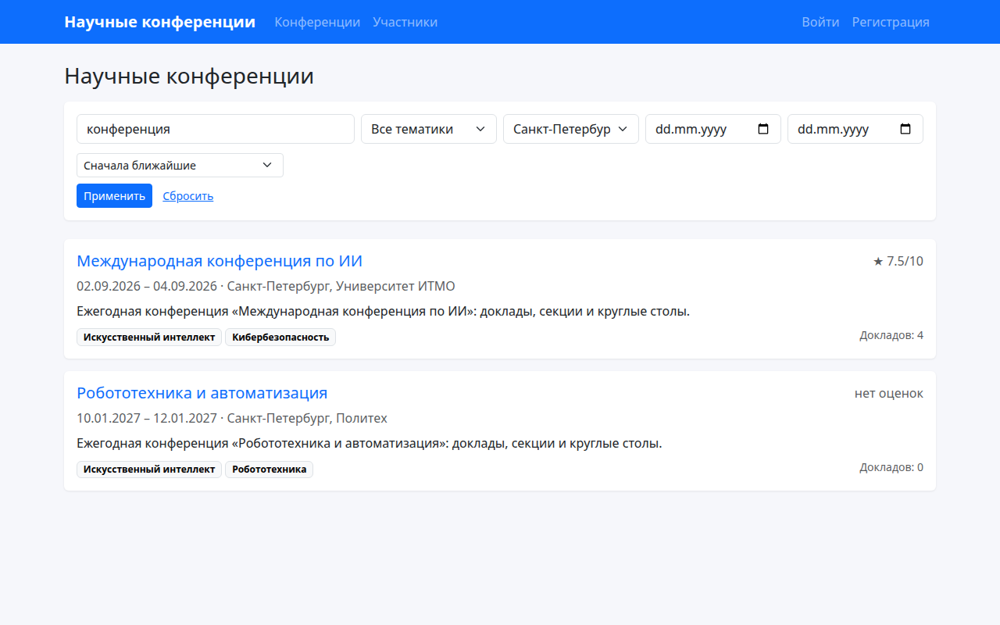
Сортировка по рейтингу (конференции без оценок в конце):
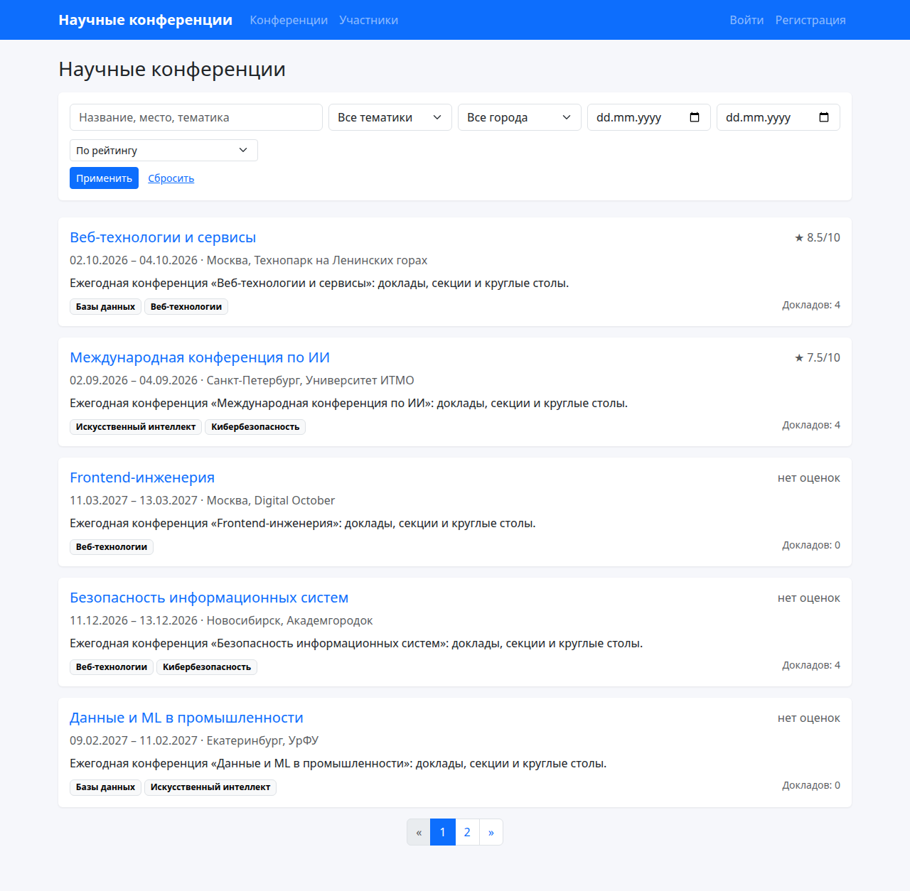
Вторая страница пагинации:
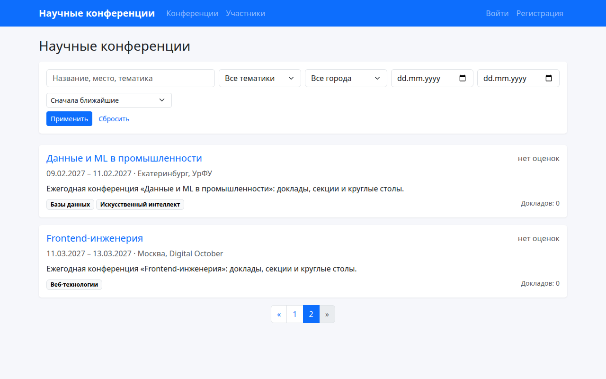
Страница конференции у обычного пользователя (кнопок администратора нет):
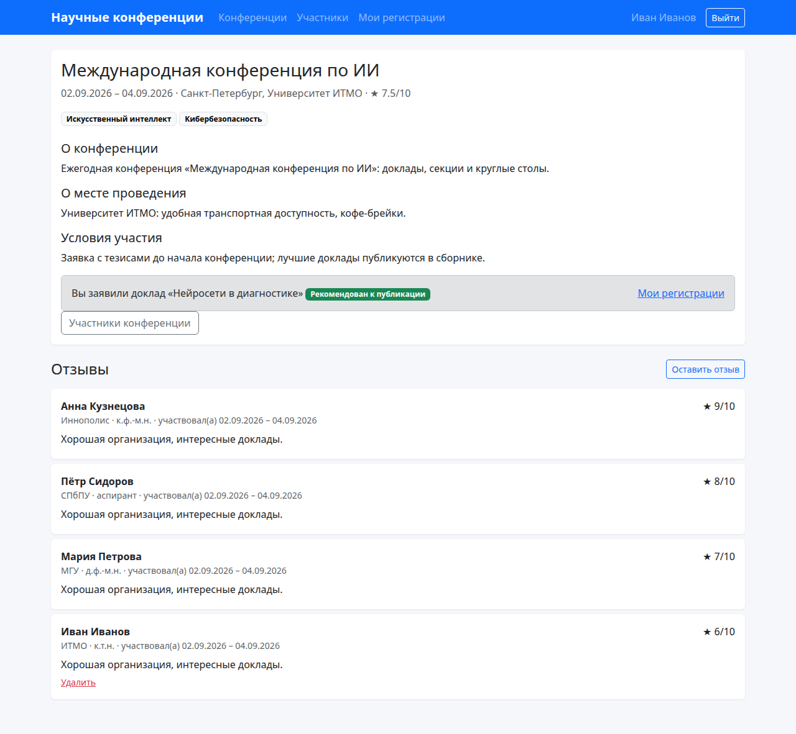
Страница той же конференции у администратора (есть «Изменить» и «Удалить»):
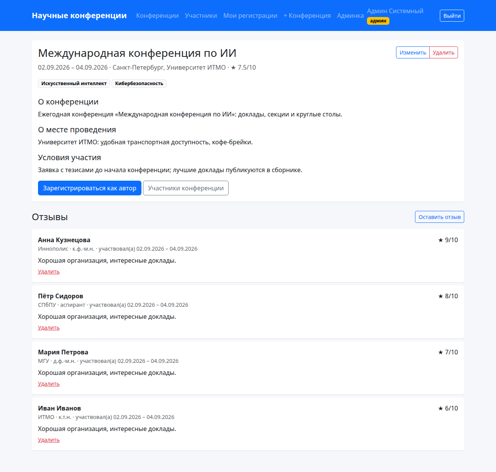
Регистрация автора на конференцию и результат в списке «Мои регистрации»:
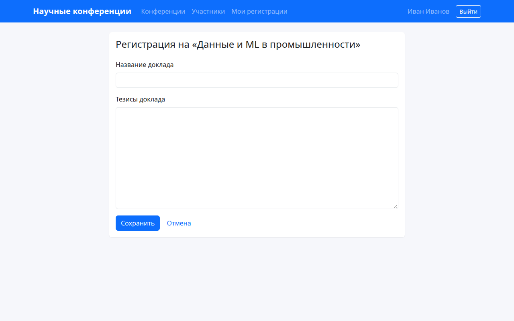
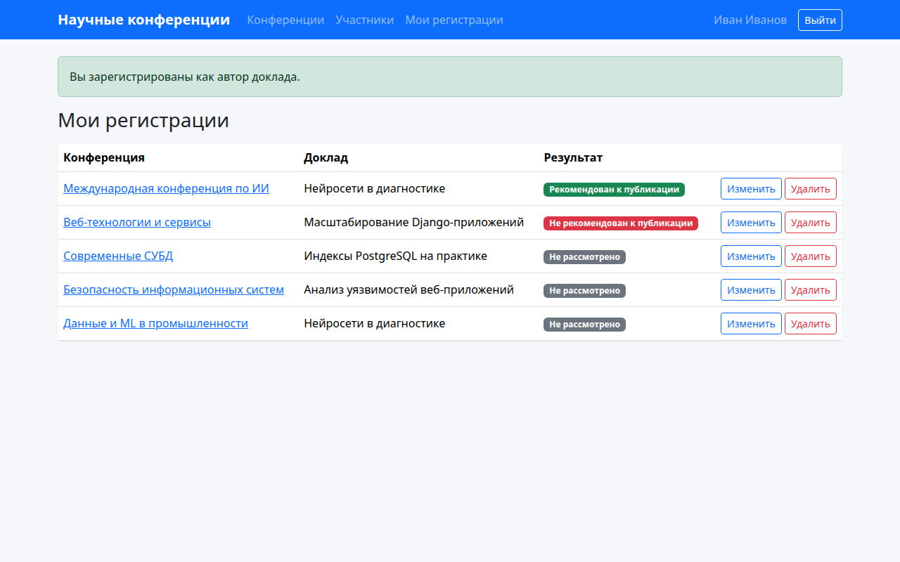
Таблицы участников: у каждой конференции своя таблица, пагинация идёт по конференциям:
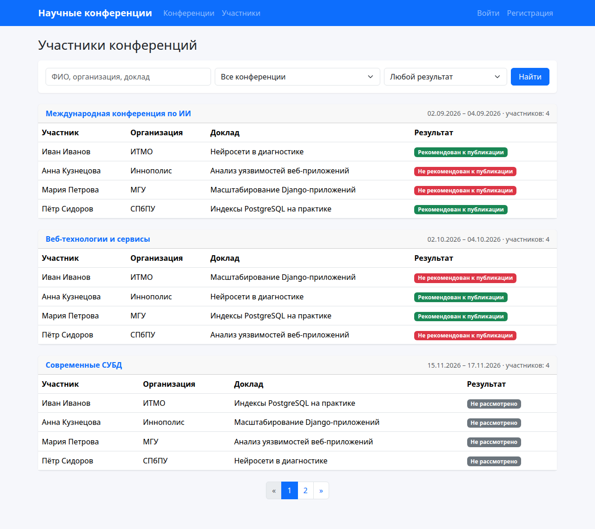
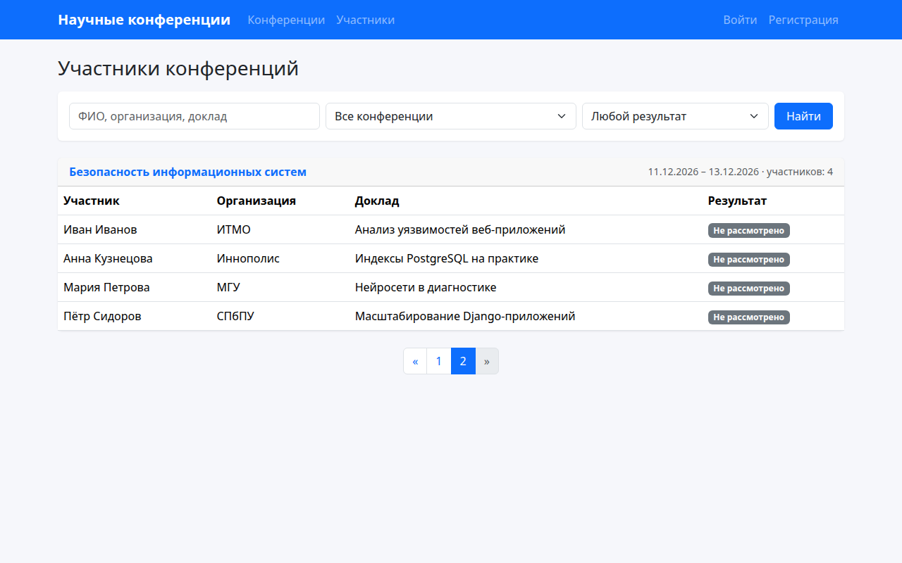
Те же таблицы у администратора: появляется столбец с кнопкой «Результат»:
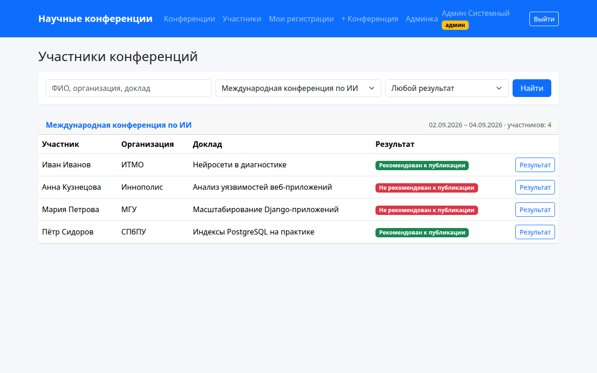
Форма отзыва с рейтингом 1–10 и форма регистрации пользователя:
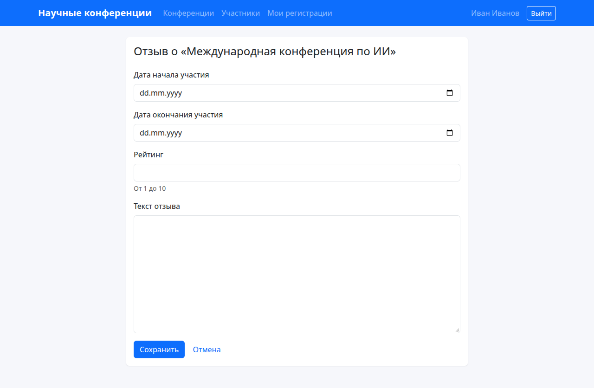
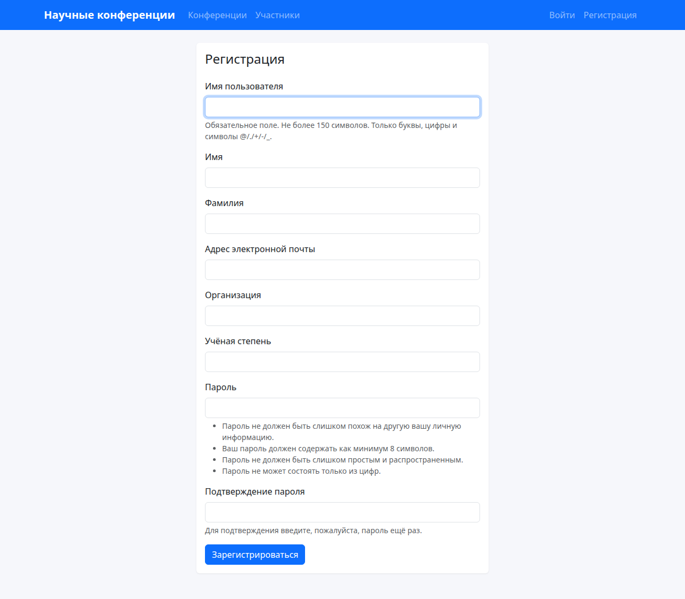
Создание конференции администратором и Django-admin (результат выступления редактируется прямо в списке):
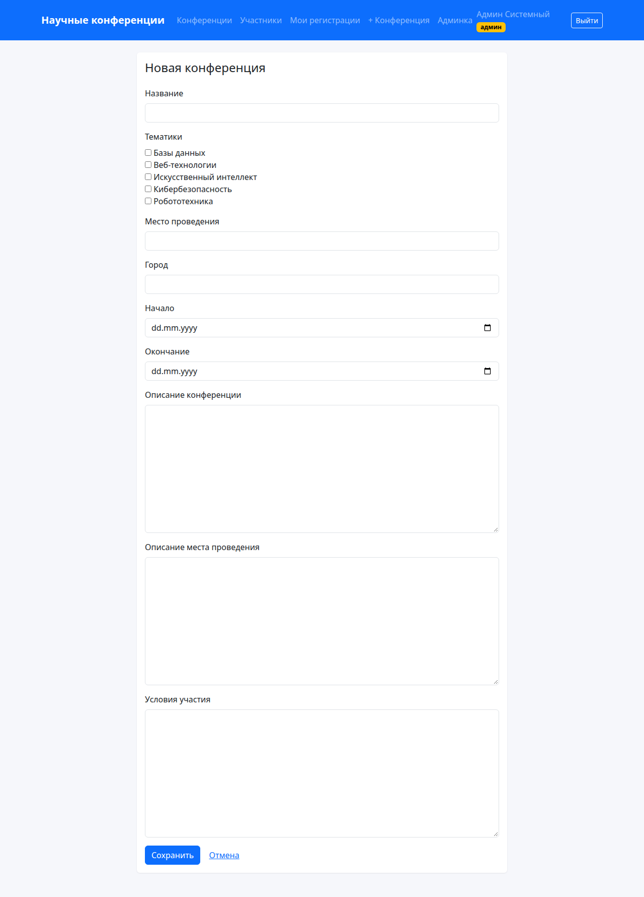
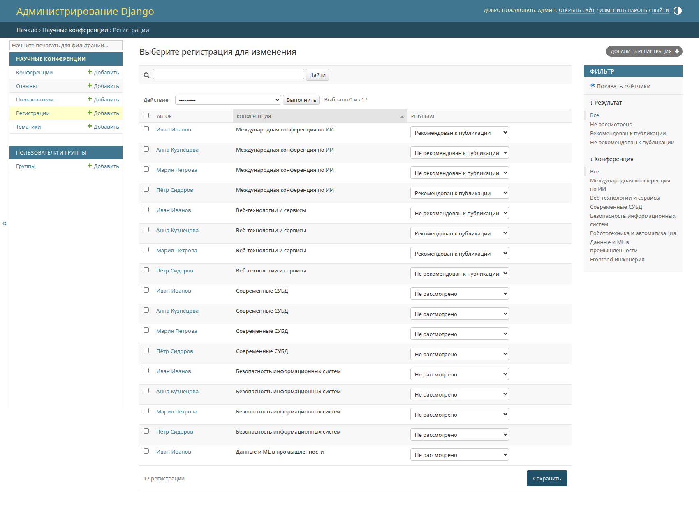
Тесты
64 теста в пакете conferences/tests/, разложенные по слоям:
| Файл | Что проверяет | Тестов |
|---|---|---|
test_validators.py |
защита данных: порядок дат, рейтинг 1–10 (границы включены), проверки в моделях | 8 |
test_services.py |
логика: поиск, фильтры, сортировка, мусорные параметры, регистрация без дубля, группировка участников | 17 |
test_permissions.py |
защита доступа: неавторизованный, обычный пользователь и администратор на закрытых страницах; чужие регистрации и отзывы | 12 |
test_views.py |
страницы целиком: отрисовка, пагинация, регистрация, сценарии автора и администратора, таблицы по конференциям, отзывы, мусорные параметры | 25 |
test_seed.py |
демо-данные: повторный запуск ничего не дублирует, отзывы только у прошедших конференций | 2 |
Общие фабрики (make_conference, make_participation, make_review) и базовый класс лежат в tests/base.py. Запуск: python manage.py test (весь набор) или, например, python manage.py test conferences.tests.test_services (один слой). Тесты работают на PostgreSQL; тот же набор проходит и на Django 3.2.
Вывод
Реализован сайт научных конференций на Django с Jinja2 и PostgreSQL. Есть регистрация и вход, просмотр конференций с поиском, фильтрами, сортировкой и пагинацией, регистрация авторов с правкой и удалением своих заявок, отзывы с рейтингом 1–10 и таблицы участников по конференциям. Администратор в клиентской части создаёт и правит конференции и указывает результат выступления. Кнопки администратора показываются по is_staff в шаблонах, а доступ проверяется в представлениях. Код разделён на слои (модели, проверки, права, логика, представления), секреты вынесены в .env, поведение подтверждено 64 тестами по слоям.